Gotas de Trans Resveratrol
+ Vitamina K2
Um cuidado diário de uso oral que acompanha a rotina de cuidado da pele.
Conhecer as gotas →Gotas + Sérum Facial em uma rotina completa de cuidado diário, desenvolvida para complementar o cuidado da pele e ajudar a manter uma aparência mais firme, hidratada e radiante.
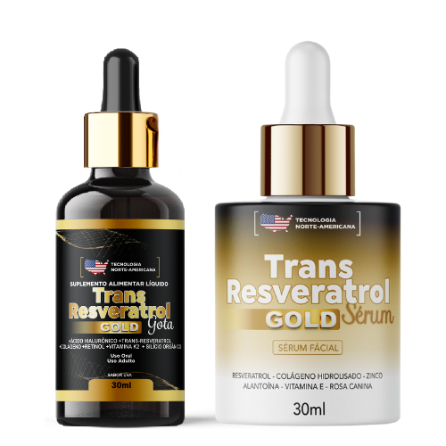
Compra 100% Segura e Satisfação Garantida!
GOTAS + SÉRUM FACIAL
Dois produtos com formas de uso diferentes, integrados à mesma rotina de cuidado da pele.
Um cuidado diário de uso oral que acompanha a rotina de cuidado da pele.
Conhecer as gotas →Um cuidado tópico para complementar a hidratação e a aparência da pele.
Conhecer o sérum →POR DENTRO + POR FORA
Cuidado de dentro
Cuidado tópico
Por dentro e por fora
O tratamento Trans Resveratrol Americano + Vitamina K2 é aprovado pela ANVISA e possui uma fórmula exclusiva para eliminar as rugas, marcas de expressão, pés de galinhas e bigode chinês de forma natural. Várias marcas no mercado brasileiro estão se passando por TRANS RESVERATROL AMERICANO, só que não fornecem resultados esperados para os clientes, então saiba que se você usar um produto realmente americano suas rugas e marcas de expressão literalmente desapareceram em no máximo 90 dias!
Cuidado antioxidante para complementar a rotina da pele.
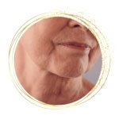
Ajuda no controle da oleosidade, com aparência hidratada e toque aveludado.
Ajuda a suavizar a aparência de rugas e marcas de expressão.
Cuidado para uma pele com aparência mais firme, luminosa e revitalizada.
Complementa o cuidado com a textura, o tom e a luminosidade da pele.
Auxilia no cuidado da pele com acne e vermelhidão, conforme a apresentação do produto.
A exclusiva tecnologia AMERICANA de aplicação sublingual proporciona uma absorção rápida e eficaz por meio da glândula que temos sob a língua, nela vasos que acessam diretamente a corrente sanguínea absorvem rapidamente seu conteúdo e promovem resultados surpreendentes em pouquíssimo tempo, essa é a forma mais eficaz, garantindo até 98% de absorção dos ativos da composição. Acaba com as rugas e marcas de expressão ja nas primeiras semanas de uso.
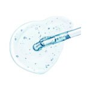
Ativo associado à hidratação e à aparência mais uniforme da pele.
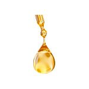
Colágeno apresentado na fórmula para o cuidado da pele.
Um dos ativos da fórmula para complementar o cuidado diário da pele.
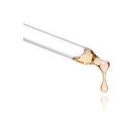
Derivado da vitamina A, apresentado na fórmula para o cuidado com os sinais do tempo.
Mineral presente na composição para o cuidado da pele, cabelos e unhas.
Um dos ativos que compõem as Gotas de Trans Resveratrol Gold.
POR FORA · CUIDADO TÓPICO
Cuidado tópico para uma pele mais hidratada, firme, uniforme e revitalizada.
ATIVOS DO SÉRUM
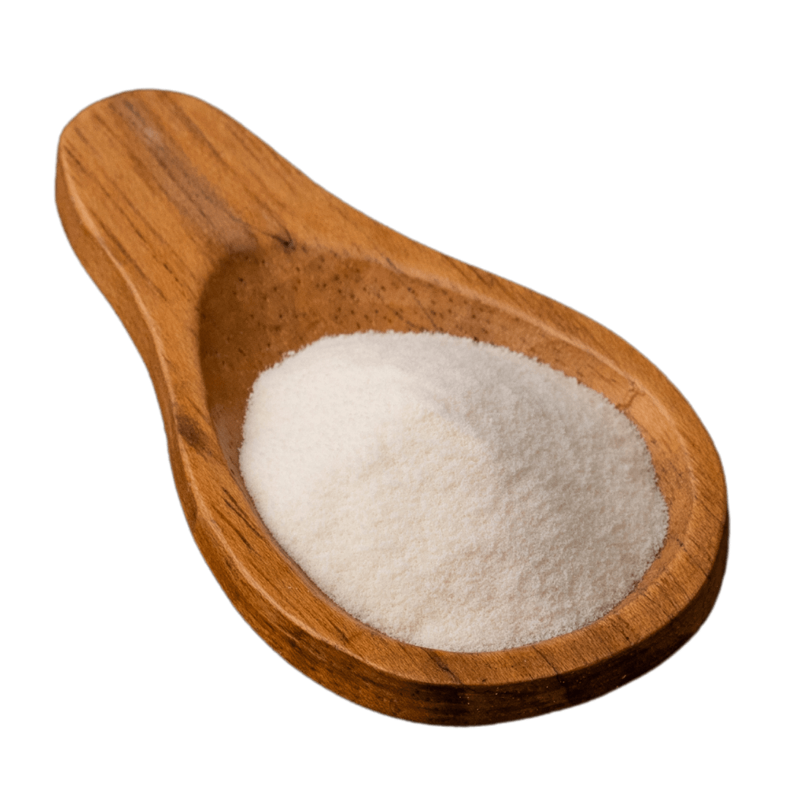
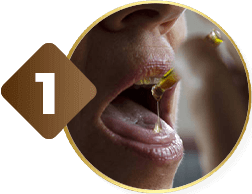
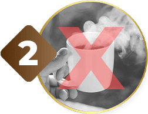
COMPLETE SUA ROTINA
Pela manhã e à noite, no rosto e pescoço.
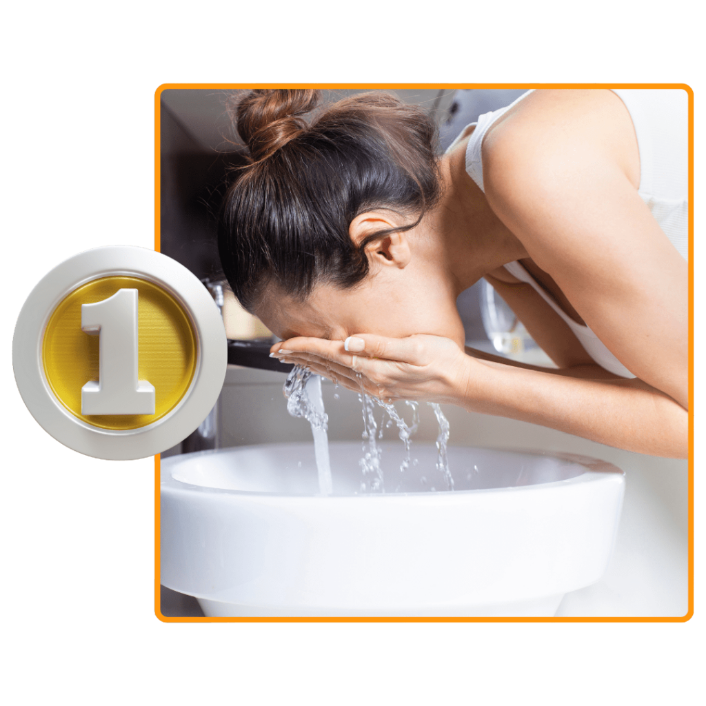
Limpe o rosto e o pescoço.
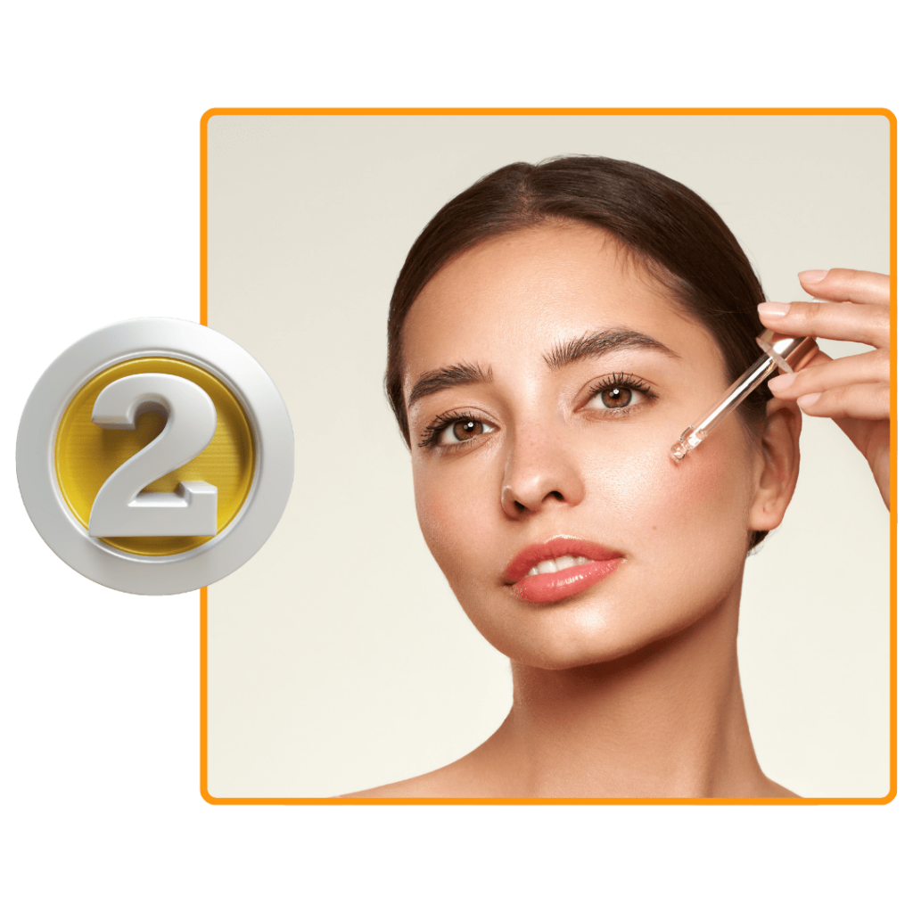
Aplique uma pequena quantidade do sérum e espalhe suavemente.
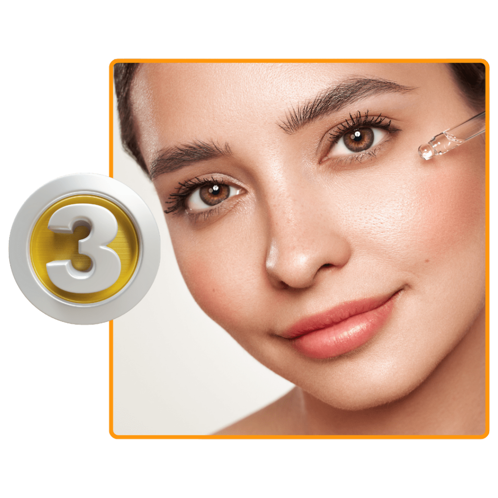
Não enxágue. Utilize pela manhã e à noite.
“Sim, já nos primeiros dias você sente o resultado. Ele tem o poder de melhorar a microcirculação local, proporcionar homogeneidade e repor vitaminas. Um verdadeiro elixir", exalta a dermatologista Claudia Marissol, da Sociedade Brasileira de Dermatologia.”
“A pele madura ou envelhecida precocemente também pode ter benefícios com o Trans Resveratrol Americano. Ele funciona como um potencializador na entrega dos ativos. Nessas condições de pele, a absorção e metabolismo dos ativos é minimizada, o Trans Resveratrol Americano age potencializando os resultados”, opina Sonia Correia.”
“Sua tecnologia exclusiva, somada a minerais preciosos, promove a firmeza da pele e combate os sinais da idade: rugas, perda de elasticidade, flacidez e tom da pele desigual. Desenvolvido principalmente para Pele de Mulheres Brasileiras.”
GOTAS + SÉRUM FACIAL
Cuidado por dentro e por fora em uma única rotina.
Confiamos tanto na eficácia do Trans Resveratrol Americano + Vitamina K2 que, caso você utilize ele durante 90 dias e não tiver resultados, devolvemos o seu dinheiro. Isso mesmo! Resultados em 90 Dias ou seu dinheiro de volta.
Trans Resveratrol Americano + VITAMINA K2 é diferente de tudo que você já utilizou antes, isso porque é a primeira vez que a ciência consegue juntar tantos ativos poderosos em uma só composição: Ácido Hialurônico + Retinol + Trans Resveratrol + VITAMINA k2 + Vitaminas e + Verisol
Tudo o que você precisará fazer é ingerir 20 gotas pela manhã ou a noite, conforme sua preferencia. Preferencialmente embaixo da língua. Nossa fórmula é ultra concentrada!.
Proporcionando o tratamento de dentro para fora mais poderoso do mercado atual, sendo 100% absorvido pelo organismo graças a composição líquida.
Atuando diretamente na produção de colágeno, restauração de células velhas e proporcionando uma pele firme e livre das rugas.
Totalmente seguro, sem nenhuma contraindicação ou efeito colateral. No entanto, você não deve interromper o uso de remédios ou da insulina sem a autorização médica.
Sim, os ingredientes utilizados são autorizados para uso em suplementos alimentares, conforme Instrução Normativa – IN N° 28/2018. As concentrações dos ingredientes são calculadas de acordo com a RDC nº 269/2005 e IN 28/2018. Por ser natural, este produto não é considerado medicamento.
Basta escolher o kit que mais combina com você. Trans resveratrol Americano pode ser pago a vista, através de boleto bancário, ou através de cartão de crédito parcelado em até 12x.
É recomendando o uso por 3 meses consecutivos para obter os melhores resultados. No entanto, há relato de pessoas que já sentem uma boa diferença entre a 2 e 4 semanas.
A cliente deve tirar uma selfie nítida antes de iniciar o tratamento de 90 dias e a selfie deve conter a data. Após terminar de tomar todos os frascos, deve ser tirada outra selfie com data provando que passou os 90 dias.
Caso ainda assim não tenha tido resultados visíveis, os frascos vazios devem ser devolvidos pela própria cliente para a empresa, e após os frascos chegarem na Fábrica, o valor pago pela cliente no tratamento de 90 dias será devolvido integralmente
Não, o produto é 100% natural. Mas Gestantes e Lactantes só podem consumir o produto através de prescrição médica. Mulheres amamentando podem consumir o produto após o 6º mês de amamentação.
O contato de atendimento ainda não foi informado.